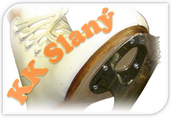
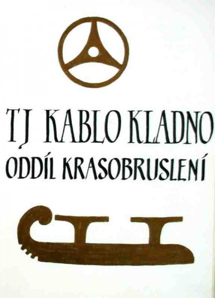

Krasobruslařský klub královského města Slaného z.s.
Se sídlem ve Víceúčelové sportovní hale ve Slaném: Lacinova 1720, 274 01 Slaný, IČO 27053717, účet u České spořitelny č. 0398910329 / 0800.
Klub je řádně zaregistrován u Ministerstva vnitra dne 17. 1. 2007 a řádně přijat za člena Českého krasobruslařského svazu s id č. 17.
Klub je přímou nástupnickou organizací Tělovýchovné jednoty Kablo Kladno, oddíl krasobruslení, která je organizační složkou TJ Kablo Kladno se sídlem Freyova 319, 272 01 Kladno, IČO 48705985.
Historie klubu

Krasobruslení na Kladensku začínalo v době, kdy byl dokončen zimní stadion. V této době se oddíl nazýval Baník a byl organizačně začleněn pod TJ SONP Kladno. Oddíl měl velkou členskou základnu, připravoval i revue pro veřejnost a zúčastňoval se soutěží na okresní, krajské i republikové úrovni.
V roce 1970 bylo ukončeno působení krasobruslařského oddílu pod TJ SONP Kladno. Proti zániku oddílu se postavil přípravný výbor ve složení Eliška Krejčová, Jana Prokešová a Hana Kujová, který zajistil přechod oddílu pod TJ Kablo Kladno. Po skoro dvouleté přestávce zahájil oddíl sportovní činnost v říjnu 1972. V té době zde působilo 13 závodnic a 3 závodníci. Již v roce 1975 je v kronice zmínka o oddílem pořádaných závodech.
Historie současného typu závodu byla započata v roce 1981, kdy byl pořádán souběžně jako soutěž o putovní pohár JUDr. Ant. Kaňky v kategorii oddílů.
Oddíl není jen základnou krasobruslení, ale snaží se i o výuku bruslení pro nejmenší. Každoročně je pořádán nábor do „základny“, ze které bývá na konci sezóny po přezkoušení prováděno přeřazení do oddílu krasobruslení.
V dubnu 2006 valná hromada uvažovala o přestupu oddílu z TJ Kablo Kladno pod jinou sportovní organizaci. Po složitém vývoji se zakládající členové dohodli se zástupci VSH Slaný na pronájmu ledové plochy ve Slaném, kde se ještě v listopadu téhož roku podařilo obnovit tradiční závod Slánská brusle. V březnu 2007 byl oddíl přejmenován na Krasobruslařský klub královského města Slaného. Od té doby píšeme novou kapitolu krasobruslení na Kladensku.
Děti v našem klubu pravidelně 6–7 měsíců trénují 4× týdně na ledě a 2× týdně na suché přípravě. Zapojili jsme se aktivně do projektu Bruslička, ve kterém naše děti slaví nemalé úspěchy.
Děkujeme všem rodičům, sponzorům, městu Slanému a v neposlední řadě Středočeskému kraji za podporu.
Bude-li tyto stránky číst někdo z bývalých trenérů a bude mít chuť doplnit nám údaje o historii, rádi je sem přidáme.
Nábor dětí do základny
Klub nepořádá velké nábory, ale v případě volné kapacity přijímáme děti přímo na trénincích. Kontaktujte nás, domluvte se a přijďte se na nás podívat. Bude-li se vám náš trénink líbit, domluvíme se na dalším postupu.
Podmínky přijetí: spodní věková hranice jsou 3 roky (pokud je dítě schopné přijímat pokyny od trenéra). Umět bruslit není podmínkou. Jsou potřeba krasobruslařské brusle se zoubky.
Informace pro členy
Zdravotní prohlídky
Podle zákona č. 373/2011 Sb. a vyhlášky č. 391/2013 Sb. musí mít každý sportovec, který vykonává výkonnostní sport nebo je registrován v organizaci zajišťující přípravu výkonnostních sportovců, platnou zdravotní prohlídku. Lékařská prohlídka je tedy nutná k tomu, aby závodník mohl trénovat. Na soutěžích za platnost prohlídky odpovídá přihlašující klub.